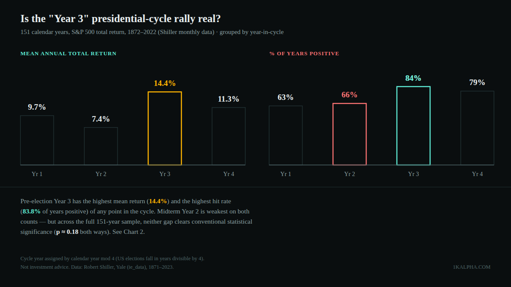
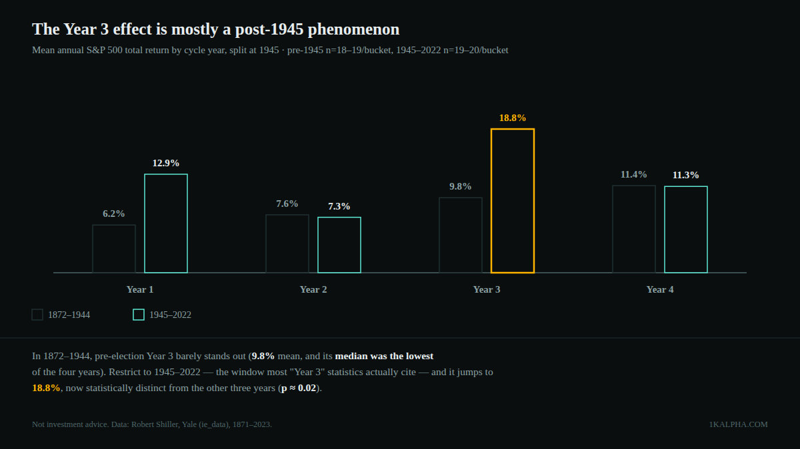

Does the Presidential Election Cycle Predict Stock Returns? A 151-Year Test
Of all the calendar rules Wall Street tells itself, the presidential election cycle is probably the oldest. The claim, popularized by Yale Hirsch's Stock Trader's Almanac since the 1960s and repeated every four years since, is specific: the year after a midterm election — "Year 3" of a president's term — is historically the market's best year, and the midterm year itself is the worst. It's a clean, checkable claim with 150+ years of market history behind it, so I ran the numbers myself instead of taking anyone's word for it.
Short version: the pattern is real in the data, but it's mostly a post-1945 phenomenon, and even then it doesn't clear a rigorous statistical bar over the full historical record. It's a genuine tilt, not a reliable signal.
Methodology
I used the same source as the other backtests on this blog: Robert Shiller's monthly S&P 500 dataset (price and dividends), mirrored as CSV by datasets/s-and-p-500 on GitHub. Dividend data is fully populated through June 2023, which makes 2022 the last complete calendar year available for a total-return calculation — so this test covers 151 full calendar years, 1872 through 2022.
For each month I computed a total return as (Pₓ + Dₓ/12) / Pₓ₋₁ − 1, where Dₓ is Shiller's annualized dividend rate for that month — the standard way to approximate reinvested-dividend returns from this dataset. I compounded the 12 monthly returns for each calendar year into an annual total return.
Every calendar year was then assigned a position in the four-year presidential cycle using nothing but arithmetic: U.S. presidential elections fall in years divisible by 4 (1872, 1876, … 2024, 2028), a fact fixed by the Constitution, not a judgment call. That gives four buckets:
- Year 1 (post-election) — year mod 4 = 1
- Year 2 (midterm) — year mod 4 = 2
- Year 3 (pre-election) — year mod 4 = 3
- Year 4 (election year) — year mod 4 = 0
For each bucket I computed the mean, median, standard deviation, and hit rate (% of years with a positive return) across all 151 years, then ran a Welch's t-test (which doesn't assume equal variance between groups) comparing Year 3 against the pooled other three years, and separately Year 2 against the pooled other three. I repeated the whole exercise on a pre-1945 / 1945-onward split, since most of the specific numbers you see cited for this pattern (e.g. "midterm years have averaged X% since 1945") use a post-WWII window rather than the full record.
The full 151-year picture
The classic story shows up in the averages, and it's not subtle:
| Cycle year | n | Mean | Median | Std dev | % positive | Worst | Best |
|---|---|---|---|---|---|---|---|
| Year 1 — post-election | 38 | 9.7% | 11.3% | 19.8% | 63.2% | −31.9% | +54.4% |
| Year 2 — midterm | 38 | 7.4% | 7.5% | 16.9% | 65.8% | −26.1% | +48.1% |
| Year 3 — pre-election | 37 | 14.4% | 18.2% | 19.3% | 83.8% | −41.8% | +49.4% |
| Year 4 — election year | 38 | 11.3% | 14.2% | 16.9% | 78.9% | −39.2% | +45.1% |
S&P 500 total return (dividends reinvested), calendar years 1872–2022, n=151. Std dev and hit rate measured within each cycle-year bucket.
Year 3 has the best mean return, the best median return, and by far the best hit rate — 83.8% of pre-election years were positive, versus 63–66% for Years 1 and 2. Year 2 (midterm) is the weakest bucket on mean and median, though not dramatically so — it's Year 1 and Year 2 both sitting well below Years 3 and 4, not a single standout "worst" year.

But "shows up in the averages" and "statistically distinguishable from noise" are different claims. Running a Welch's t-test on the full sample: Year 3's 14.4% mean versus 9.5% for the pooled other three years gives t = 1.37, p ≈ 0.18 — nowhere near the conventional p < 0.05 bar. Year 2's 7.4% versus 11.8% for the others gives t = −1.35, p ≈ 0.18 as well. With annual returns this volatile (16–20% standard deviation within every bucket) and only 37–38 observations per group, the gaps you see in the table above are consistent with the pattern being real, but they're also consistent with it being noise that happens to look tidy over one particular 151-year sample.
The effect concentrates almost entirely after 1945
Given that ambiguity, I split the sample at 1945 — not because that year is special to this pattern, but because it's the window most of the specific "presidential cycle" statistics actually in circulation are built on. The result changes the picture a lot:
| Cycle year | 1872–1944 mean | 1872–1944 median | 1945–2022 mean | 1945–2022 median |
|---|---|---|---|---|
| Year 1 | 6.2% | 7.9% | 12.9% | 14.5% |
| Year 2 (midterm) | 7.6% | 8.8% | 7.3% | 5.3% |
| Year 3 (pre-election) | 9.8% | 5.5% | 18.8% | 21.6% |
| Year 4 | 11.4% | 9.0% | 11.3% | 15.5% |
n=18–19 per bucket (1872–1944), n=19–20 per bucket (1945–2022).
In the 73 years before 1945, Year 3 barely stands out at all — its mean (9.8%) is close to Year 4's (11.4%), and its median (5.5%) is actually the lowest of all four buckets, dragged down by a handful of brutal pre-election-year crashes (1893, 1929, 1937). The "Year 3 rally" as popularly described just doesn't show up in the pre-WWII record.
In the 78 years since 1945, it shows up loudly: Year 3's mean jumps to 18.8%, its median to 21.6%, and 95% of post-1945 pre-election years were positive. Run the same Welch's t-test on just this subsample and it clears significance: t = 2.34, p ≈ 0.024. The midterm-year weakness, by contrast, still doesn't reach significance even in the post-1945 window alone (t = −1.46, p ≈ 0.16) — "midterm years are weak" is a softer, noisier claim than "Year 3 is strong."

Limitations
- Small, non-independent samples. 37–38 years per bucket (18–20 per era split) is thin for classical significance testing, and calendar years aren't independent draws — a multi-year bull or bear regime (the 1990s, 2008–09) can dominate several buckets' worth of observations from a single underlying event.
- Calendar math, not causal mechanism. Cycle position here is assigned purely by year mod 4 — it says nothing about which party held office, what policies were enacted, or Fed posture. This tests whether returns historically clustered by cycle position, not why.
- The era split is not a clean experiment. 1945 was chosen because it's the window most circulating statistics use, not because a Bayesian would pick it blind. A different, equally defensible cutoff (1929, 1950, 1980) would shift the post-split numbers somewhat.
- Overlaps with other seasonal claims already tested on this blog. Presidential cycle years are not independent of the "Sell in May" and "January Barometer" patterns previously covered here — a strong or weak year shows up in more than one framework at once, so treat these as related lenses on the same underlying return series, not fully separate confirmations.
- No fees, taxes, or slippage — and this isn't a strategy that could be traded as described anyway, since you'd need to already know which cycle year you're in (which you do) but the claim offers no entry/exit signal finer than "buy at the start of the calendar year."
Bottom line
- The direction of the popular claim holds up — Year 3 does have the best mean, median, and hit rate of the four cycle years across 151 years of data, and Year 2 (midterm) is on average the weakest.
- The magnitude is mostly a modern phenomenon. The effect is roughly twice as large and only reaches conventional statistical significance in the 1945–2022 sample; it's much weaker and statistically indistinguishable from noise in the 73 years before that.
- Over the full 151-year record, neither half of the claim — "Year 3 is best" or "midterm is worst" — clears p < 0.05. That doesn't make the pattern imaginary, but it does mean "150 years of history prove it" overstates what a rigorous test actually shows.
For what it's worth: under the same year-mod-4 arithmetic used throughout this post, 2026 is a midterm year and 2027 would be the next "Year 3" — a fact of the U.S. election calendar, not a forecast. Nothing about that placement is a reason to change how any position here is sized.